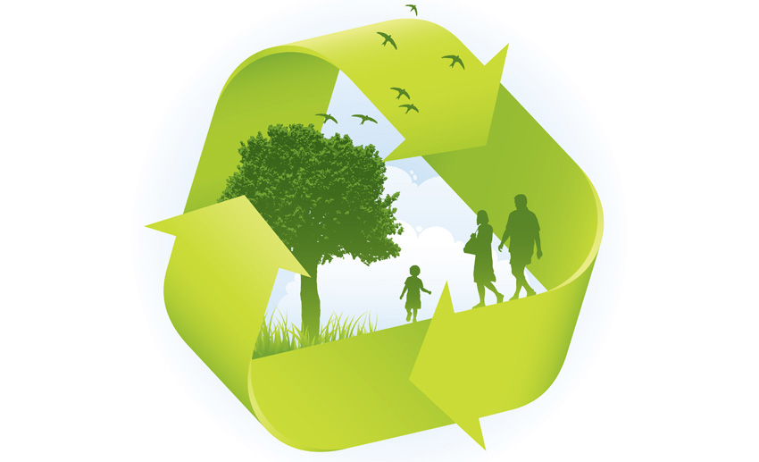

50 Simple Ideas To Begin Sustainable Living
If the end of the world would depend on you, would you save it? This is a tough question, yet we hold this responsibility
every second of every day. We live in a world that needs our help to keep surviving, but are we doing enough?
Here I will share with you some of the best ways in how to live sustainability and adopt a more
sustainable lifestyle that will make a difference in the world that we all share.
What Living A Sustainable Lifestyle Means
Living a sustainable lifestyle is adopting a new way of living. It's to live in a way that would meet all the natural human needs to be
alive, which are basically food, water, and shelter. But without any extra luxury and resources that bring no value for our surviving
and can potentially harm the planet.
 The main reason to adopt a sustainable lifestyle and deprive ourselves of things that we don't need is mainly to attempt to
reduce the negative impact that we continually have on this planet.
The main reason to adopt a sustainable lifestyle and deprive ourselves of things that we don't need is mainly to attempt to
reduce the negative impact that we continually have on this planet.
That way, we stand a chance to ensure that future generations will have not only a place to call home but will have the essential
resources that they need to survive.
So if you think about it, choosing to live a more sustainable life is just like an excellent investment for future generations to come.
to give them a chance to live in this world and experience the amazing things that our planet can offer.
By reducing our carbon footprint, our energy consumptions, fashion choices, and our diets, we can make a difference that will
change the lives of future generations to come.
We are all here due to the man heroic actions that generations before us took upon them to ensure that we could have a
future, so isn't it our obligation to ensure that the next ones will have a standing chance as well?

The Importance of Sustainable Living
The answer is quite simple andstraightforward we need our planet to keep being able to resource us with the basic things
that we need to survive. It's about survival but it's also about stopping catastrophic disasters from happening.
Natural disasters are not just accidental damage from mother nature. We are the cause for many of the climate change
challenges that we have been experiencing, things like floods, earthquakes, hurricanes, even the abnormal snowing in the Sahara desert.
Our impact has consequences on the planet, and many of those will affect us directly. Mainly due to
the things that we use every day.
Things like the enormous and misplaced amount of garbage disposal, the high demand for fossil fuel (that provide us with
electricity). Excessive carbon print and wrongly disposal of toxic chemicals into the sea, are just some of the human-made acts
against the environment. Little but incredible impactful actions can lead to :

• Health problems, which have been more and more common.
• Climate change, for example, the rising levels of the water.
• Lack of resources from mother nature, without water and food, we can't survive.
Little and almost seamless acts such as dropping a little straw on the ground can have terrible consequences that will affect
every person, animal, and the environment. So if you could make a difference today, would you?
There are so many little actions that will have a tremendous impact on saving the world and you can do them so easily and
without much effort Small action that will help you to be more grateful for the world that we all share.
Living a sustainable lifestyle might seem simple, but it represents a tremendous feeling of joy in
knowing that you are one of the reasons why future generations will have a chance.